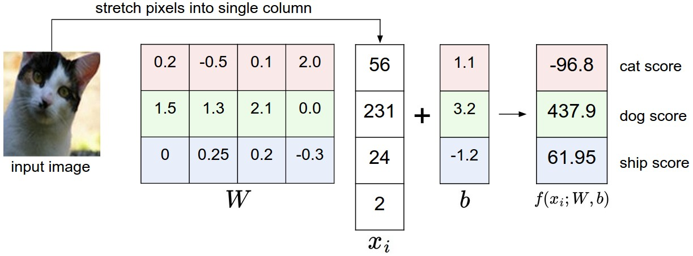

Table of Contents:
Linear Classification
In the last section we introduced the problem of Image
Classification, which is the task of assigning a single label to an
image from a fixed set of categories. Moreover, we described the
k-Nearest Neighbor (kNN) classifier which labels images by comparing
them to (annotated) images from the training set. As we saw, kNN has a
number of disadvantages:
- The classifier must remember all of the training data and
store it for future comparisons with the test data. This is space
inefficient because datasets may easily be gigabytes in size.
- Classifying a test image is expensive since it requires a comparison
to all training images.
Overview. We are now going to develop a more
powerful approach to image classification that we will eventually
naturally extend to entire Neural Networks and Convolutional Neural
Networks. The approach will have two major components: a score
function that maps the raw data to class scores, and a
loss function that quantifies the agreement between the
predicted scores and the ground truth labels. We will then cast this as
an optimization problem in which we will minimize the loss function with
respect to the parameters of the score function.
Parameterized
mapping from images to label scores
The first component of this approach is to define the score function
that maps the pixel values of an image to confidence scores for each
class. We will develop the approach with a concrete example. As before,
let’s assume a training dataset of images \( x_i R^D \), each associated
with a label \( y_i \). Here \( i = 1 N \) and \( y_i { 1 K } \). That
is, we have N examples (each with a dimensionality
D) and K distinct categories. For
example, in CIFAR-10 we have a training set of N =
50,000 images, each with D = 32 x 32 x 3 = 3072 pixels,
and K = 10, since there are 10 distinct classes (dog,
cat, car, etc). We will now define the score function \(f: R^D R^K\)
that maps the raw image pixels to class scores.
Linear classifier. In this module we will start out
with arguably the simplest possible function, a linear mapping:
\[
f(x_i, W, b) = W x_i + b
\]
In the above equation, we are assuming that the image \(x_i\) has all
of its pixels flattened out to a single column vector of shape [D x 1].
The matrix W (of size [K x D]), and the vector
b (of size [K x 1]) are the parameters
of the function. In CIFAR-10, \(x_i\) contains all pixels in the i-th
image flattened into a single [3072 x 1] column, W is
[10 x 3072] and b is [10 x 1], so 3072 numbers come
into the function (the raw pixel values) and 10 numbers come out (the
class scores). The parameters in W are often called the
weights, and b is called the
bias vector because it influences the output scores,
but without interacting with the actual data \(x_i\). However, you will
often hear people use the terms weights and parameters
interchangeably.
There are a few things to note:
- First, note that the single matrix multiplication \(W x_i\) is
effectively evaluating 10 separate classifiers in parallel (one for each
class), where each classifier is a row of W.
- Notice also that we think of the input data \( (x_i, y_i) \) as
given and fixed, but we have control over the setting of the parameters
W,b. Our goal will be to set these in such way that the
computed scores match the ground truth labels across the whole training
set. We will go into much more detail about how this is done, but
intuitively we wish that the correct class has a score that is higher
than the scores of incorrect classes.
- An advantage of this approach is that the training data is used to
learn the parameters W,b, but once the learning is
complete we can discard the entire training set and only keep the
learned parameters. That is because a new test image can be simply
forwarded through the function and classified based on the computed
scores.
- Lastly, note that classifying the test image involves a single
matrix multiplication and addition, which is significantly faster than
comparing a test image to all training images.
Foreshadowing: Convolutional Neural Networks will map image pixels to
scores exactly as shown above, but the mapping ( f ) will be more
complex and will contain more parameters.
Interpreting a linear
classifier
Notice that a linear classifier computes the score of a class as a
weighted sum of all of its pixel values across all 3 of its color
channels. Depending on precisely what values we set for these weights,
the function has the capacity to like or dislike (depending on the sign
of each weight) certain colors at certain positions in the image. For
instance, you can imagine that the “ship” class might be more likely if
there is a lot of blue on the sides of an image (which could likely
correspond to water). You might expect that the “ship” classifier would
then have a lot of positive weights across its blue channel weights
(presence of blue increases score of ship), and negative weights in the
red/green channels (presence of red/green decreases the score of
ship).

An example of mapping an image to class scores. For the sake of
visualization, we assume the image only has 4 pixels (4 monochrome
pixels, we are not considering color channels in this example for
brevity), and that we have 3 classes (red (cat), green (dog), blue
(ship) class). (Clarification: in particular, the colors here simply
indicate 3 classes and are not related to the RGB channels.) We stretch
the image pixels into a column and perform matrix multiplication to get
the scores for each class. Note that this particular set of weights W is
not good at all: the weights assign our cat image a very low cat score.
In particular, this set of weights seems convinced that it’s looking at
a dog.
Analogy of images as high-dimensional points. Since
the images are stretched into high-dimensional column vectors, we can
interpret each image as a single point in this space (e.g. each image in
CIFAR-10 is a point in 3072-dimensional space of 32x32x3 pixels).
Analogously, the entire dataset is a (labeled) set of points.
Since we defined the score of each class as a weighted sum of all
image pixels, each class score is a linear function over this space. We
cannot visualize 3072-dimensional spaces, but if we imagine squashing
all those dimensions into only two dimensions, then we can try to
visualize what the classifier might be doing:

Cartoon representation of the image space, where each image is a single point, and three classifiers are visualized. Using the example of the car classifier (in red), the red line shows all points in the space that get a score of zero for the car class. The red arrow shows the direction of increase, so all points to the right of the red line have positive (and linearly increasing) scores, and all points to the left have a negative (and linearly decreasing) scores.
As we saw above, every row of \(W\) is a classifier for one of the
classes. The geometric interpretation of these numbers is that as we
change one of the rows of \(W\), the corresponding line in the pixel
space will rotate in different directions. The biases \(b\), on the
other hand, allow our classifiers to translate the lines. In particular,
note that without the bias terms, plugging in \( x_i = 0 \) would always
give score of zero regardless of the weights, so all lines would be
forced to cross the origin.
Interpretation of linear classifiers as template
matching. Another interpretation for the weights \(W\) is that
each row of \(W\) corresponds to a template (or sometimes also
called a prototype) for one of the classes. The score of each
class for an image is then obtained by comparing each template with the
image using an inner product (or dot product) one by
one to find the one that “fits” best. With this terminology, the linear
classifier is doing template matching, where the templates are learned.
Another way to think of it is that we are still effectively doing
Nearest Neighbor, but instead of having thousands of training images we
are only using a single image per class (although we will learn it, and
it does not necessarily have to be one of the images in the training
set), and we use the (negative) inner product as the distance instead of
the L1 or L2 distance.

Skipping ahead a bit: Example learned weights at the end of learning for CIFAR-10. Note that, for example, the ship template contains a lot of blue pixels as expected. This template will therefore give a high score once it is matched against images of ships on the ocean with an inner product.
Additionally, note that the horse template seems to contain a
two-headed horse, which is due to both left and right facing horses in
the dataset. The linear classifier merges these two modes of
horses in the data into a single template. Similarly, the car classifier
seems to have merged several modes into a single template which has to
identify cars from all sides, and of all colors. In particular, this
template ended up being red, which hints that there are more red cars in
the CIFAR-10 dataset than of any other color. The linear classifier is
too weak to properly account for different-colored cars, but as we will
see later neural networks will allow us to perform this task. Looking
ahead a bit, a neural network will be able to develop intermediate
neurons in its hidden layers that could detect specific car types
(e.g. green car facing left, blue car facing front, etc.), and neurons
on the next layer could combine these into a more accurate car score
through a weighted sum of the individual car detectors.
Bias trick. Before moving on we want to mention a
common simplifying trick to representing the two parameters \(W,b\) as
one. Recall that we defined the score function as:
\[
f(x_i, W, b) = W x_i + b
\]
As we proceed through the material it is a little cumbersome to keep
track of two sets of parameters (the biases \(b\) and weights \(W\))
separately. A commonly used trick is to combine the two sets of
parameters into a single matrix that holds both of them by extending the
vector \(x_i\) with one additional dimension that always holds the
constant \(1\) - a default bias dimension. With the extra
dimension, the new score function will simplify to a single matrix
multiply:
\[
f(x_i, W) = W x_i
\]
With our CIFAR-10 example, \(x_i\) is now [3073 x 1] instead of [3072
x 1] - (with the extra dimension holding the constant 1), and \(W\) is
now [10 x 3073] instead of [10 x 3072]. The extra column that \(W\) now
corresponds to the bias \(b\). An illustration might help clarify:

Illustration of the bias trick. Doing a matrix multiplication and then adding a bias vector (left) is equivalent to adding a bias dimension with a constant of 1 to all input vectors and extending the weight matrix by 1 column - a bias column (right). Thus, if we preprocess our data by appending ones to all vectors we only have to learn a single matrix of weights instead of two matrices that hold the weights and the biases.
Image data preprocessing. As a quick note, in the
examples above we used the raw pixel values (which range from [0…255]).
In Machine Learning, it is a very common practice to always perform
normalization of your input features (in the case of images, every pixel
is thought of as a feature). In particular, it is important to
center your data by subtracting the mean from every
feature. In the case of images, this corresponds to computing a mean
image across the training images and subtracting it from every
image to get images where the pixels range from approximately [-127 …
127]. Further common preprocessing is to scale each input feature so
that its values range from [-1, 1]. Of these, zero mean centering is
arguably more important but we will have to wait for its justification
until we understand the dynamics of gradient descent.
Loss function
In the previous section we defined a function from the pixel values
to class scores, which was parameterized by a set of weights \(W\).
Moreover, we saw that we don’t have control over the data \( (x_i,y_i)
\) (it is fixed and given), but we do have control over these weights
and we want to set them so that the predicted class scores are
consistent with the ground truth labels in the training data.
For example, going back to the example image of a cat and its scores
for the classes “cat”, “dog” and “ship”, we saw that the particular set
of weights in that example was not very good at all: We fed in the
pixels that depict a cat but the cat score came out very low (-96.8)
compared to the other classes (dog score 437.9 and ship score 61.95). We
are going to measure our unhappiness with outcomes such as this one with
a loss function (or sometimes also referred to as the
cost function or the objective).
Intuitively, the loss will be high if we’re doing a poor job of
classifying the training data, and it will be low if we’re doing
well.
Multiclass Support
Vector Machine loss
There are several ways to define the details of the loss function. As
a first example we will first develop a commonly used loss called the
Multiclass Support Vector Machine (SVM) loss. The SVM
loss is set up so that the SVM “wants” the correct class for each image
to a have a score higher than the incorrect classes by some fixed margin
\(\). Notice that it’s sometimes helpful to anthropomorphise the loss
functions as we did above: The SVM “wants” a certain outcome in the
sense that the outcome would yield a lower loss (which is good).
Let’s now get more precise. Recall that for the i-th example we are
given the pixels of image \( x_i \) and the label \( y_i \) that
specifies the index of the correct class. The score function takes the
pixels and computes the vector \( f(x_i, W) \) of class scores, which we
will abbreviate to \(s\) (short for scores). For example, the score for
the j-th class is the j-th element: \( s_j = f(x_i, W)_j \). The
Multiclass SVM loss for the i-th example is then formalized as
follows:
\[
L_i = \sum_{j\neq y_i} \max(0, s_j - s_{y_i} + \Delta)
\]
Example. Lets unpack this with an example to see how
it works. Suppose that we have three classes that receive the scores \(
s = [13, -7, 11]\), and that the first class is the true class
(i.e. \(y_i = 0\)). Also assume that \(\) (a hyperparameter we will go
into more detail about soon) is 10. The expression above sums over all
incorrect classes (\(j y_i\)), so we get two terms:
\[
L_i = \max(0, -7 - 13 + 10) + \max(0, 11 - 13 + 10)
\]
You can see that the first term gives zero since [-7 - 13 + 10] gives
a negative number, which is then thresholded to zero with the
\(max(0,-)\) function. We get zero loss for this pair because the
correct class score (13) was greater than the incorrect class score (-7)
by at least the margin 10. In fact the difference was 20, which is much
greater than 10 but the SVM only cares that the difference is at least
10; Any additional difference above the margin is clamped at zero with
the max operation. The second term computes [11 - 13 + 10] which gives
8. That is, even though the correct class had a higher score than the
incorrect class (13 > 11), it was not greater by the desired margin
of 10. The difference was only 2, which is why the loss comes out to 8
(i.e. how much higher the difference would have to be to meet the
margin). In summary, the SVM loss function wants the score of the
correct class \(y_i\) to be larger than the incorrect class scores by at
least by \(\) (delta). If this is not the case, we will accumulate
loss.
Note that in this particular module we are working with linear score
functions ( \( f(x_i; W) = W x_i \) ), so we can also rewrite the loss
function in this equivalent form:
\[
L_i = \sum_{j\neq y_i} \max(0, w_j^T x_i - w_{y_i}^T x_i + \Delta)
\]
where \(w_j\) is the j-th row of \(W\) reshaped as a column. However,
this will not necessarily be the case once we start to consider more
complex forms of the score function \(f\).
A last piece of terminology we’ll mention before we finish with this
section is that the threshold at zero \(max(0,-)\) function is often
called the hinge loss. You’ll sometimes hear about
people instead using the squared hinge loss SVM (or L2-SVM), which uses
the form \(max(0,-)^2\) that penalizes violated margins more strongly
(quadratically instead of linearly). The unsquared version is more
standard, but in some datasets the squared hinge loss can work better.
This can be determined during cross-validation.
The loss function quantifies our unhappiness with predictions on the
training set

The Multiclass Support Vector Machine "wants" the score of the correct class to be higher than all other scores by at least a margin of delta. If any class has a score inside the red region (or higher), then there will be accumulated loss. Otherwise the loss will be zero. Our objective will be to find the weights that will simultaneously satisfy this constraint for all examples in the training data and give a total loss that is as low as possible.<br>
Regularization. There is one bug with the loss
function we presented above. Suppose that we have a dataset and a set of
parameters W that correctly classify every example
(i.e. all scores are so that all the margins are met, and \(L_i = 0\)
for all i). The issue is that this set of W is not
necessarily unique: there might be many similar W that
correctly classify the examples. One easy way to see this is that if
some parameters W correctly classify all examples (so
loss is zero for each example), then any multiple of these parameters \(
W \) where \( > 1 \) will also give zero loss because this
transformation uniformly stretches all score magnitudes and hence also
their absolute differences. For example, if the difference in scores
between a correct class and a nearest incorrect class was 15, then
multiplying all elements of W by 2 would make the new
difference 30.
In other words, we wish to encode some preference for a certain set
of weights W over others to remove this ambiguity. We
can do so by extending the loss function with a regularization
penalty \(R(W)\). The most common regularization penalty is the
squared L2 norm that discourages large weights through
an elementwise quadratic penalty over all parameters:
\[
R(W) = \sum_k\sum_l W_{k,l}^2
\]
In the expression above, we are summing up all the squared elements
of \(W\). Notice that the regularization function is not a function of
the data, it is only based on the weights. Including the regularization
penalty completes the full Multiclass Support Vector Machine loss, which
is made up of two components: the data loss (which is
the average loss \(L_i\) over all examples) and the
regularization loss. That is, the full Multiclass SVM
loss becomes:
\[
L = \underbrace{ \frac{1}{N} \sum_i L_i }_\text{data loss} +
\underbrace{ \lambda R(W) }_\text{regularization loss} \\\\
\]
Or expanding this out in its full form:
\[
L = \frac{1}{N} \sum_i \sum_{j\neq y_i} \left[ \max(0, f(x_i; W)_j -
f(x_i; W)_{y_i} + \Delta) \right] + \lambda \sum_k\sum_l W_{k,l}^2
\]
Where \(N\) is the number of training examples. As you can see, we
append the regularization penalty to the loss objective, weighted by a
hyperparameter \(\). There is no simple way of setting this
hyperparameter and it is usually determined by cross-validation.
In addition to the motivation we provided above there are many
desirable properties to include the regularization penalty, many of
which we will come back to in later sections. For example, it turns out
that including the L2 penalty leads to the appealing max
margin property in SVMs (See CS229
lecture notes for full details if you are interested).
The most appealing property is that penalizing large weights tends to
improve generalization, because it means that no input dimension can
have a very large influence on the scores all by itself. For example,
suppose that we have some input vector \(x = [1,1,1,1] \) and two weight
vectors \(w_1 = [1,0,0,0]\), \(w_2 = [0.25,0.25,0.25,0.25] \). Then
\(w_1^Tx = w_2^Tx = 1\) so both weight vectors lead to the same dot
product, but the L2 penalty of \(w_1\) is 1.0 while the L2 penalty of
\(w_2\) is only 0.25. Therefore, according to the L2 penalty the weight
vector \(w_2\) would be preferred since it achieves a lower
regularization loss. Intuitively, this is because the weights in \(w_2\)
are smaller and more diffuse. Since the L2 penalty prefers smaller and
more diffuse weight vectors, the final classifier is encouraged to take
into account all input dimensions to small amounts rather than a few
input dimensions and very strongly. As we will see later in the class,
this effect can improve the generalization performance of the
classifiers on test images and lead to less overfitting.
Note that biases do not have the same effect since, unlike the
weights, they do not control the strength of influence of an input
dimension. Therefore, it is common to only regularize the weights \(W\)
but not the biases \(b\). However, in practice this often turns out to
have a negligible effect. Lastly, note that due to the regularization
penalty we can never achieve loss of exactly 0.0 on all examples,
because this would only be possible in the pathological setting of \(W =
0\).
Code. Here is the loss function (without
regularization) implemented in Python, in both unvectorized and
half-vectorized form:
def L_i(x, y, W):
"""
unvectorized version. Compute the multiclass svm loss for a single example (x,y)
- x is a column vector representing an image (e.g. 3073 x 1 in CIFAR-10)
with an appended bias dimension in the 3073-rd position (i.e. bias trick)
- y is an integer giving index of correct class (e.g. between 0 and 9 in CIFAR-10)
- W is the weight matrix (e.g. 10 x 3073 in CIFAR-10)
"""
delta = 1.0 # see notes about delta later in this section
scores = W.dot(x) # scores becomes of size 10 x 1, the scores for each class
correct_class_score = scores[y]
D = W.shape[0] # number of classes, e.g. 10
loss_i = 0.0
for j in range(D): # iterate over all wrong classes
if j == y:
# skip for the true class to only loop over incorrect classes
continue
# accumulate loss for the i-th example
loss_i += max(0, scores[j] - correct_class_score + delta)
return loss_i
def L_i_vectorized(x, y, W):
"""
A faster half-vectorized implementation. half-vectorized
refers to the fact that for a single example the implementation contains
no for loops, but there is still one loop over the examples (outside this function)
"""
delta = 1.0
scores = W.dot(x)
# compute the margins for all classes in one vector operation
margins = np.maximum(0, scores - scores[y] + delta)
# on y-th position scores[y] - scores[y] canceled and gave delta. We want
# to ignore the y-th position and only consider margin on max wrong class
margins[y] = 0
loss_i = np.sum(margins)
return loss_i
def L(X, y, W):
"""
fully-vectorized implementation :
- X holds all the training examples as columns (e.g. 3073 x 50,000 in CIFAR-10)
- y is array of integers specifying correct class (e.g. 50,000-D array)
- W are weights (e.g. 10 x 3073)
"""
# evaluate loss over all examples in X without using any for loops
# left as exercise to reader in the assignment
The takeaway from this section is that the SVM loss takes one
particular approach to measuring how consistent the predictions on
training data are with the ground truth labels. Additionally, making
good predictions on the training set is equivalent to minimizing the
loss.
All we have to do now is to come up with a way to find the weights
that minimize the loss.
Practical Considerations
Setting Delta. Note that we brushed over the
hyperparameter \(\) and its setting. What value should it be set to, and
do we have to cross-validate it? It turns out that this hyperparameter
can safely be set to \(= 1.0\) in all cases. The hyperparameters \(\)
and \(\) seem like two different hyperparameters, but in fact they both
control the same tradeoff: The tradeoff between the data loss and the
regularization loss in the objective. The key to understanding this is
that the magnitude of the weights \(W\) has direct effect on the scores
(and hence also their differences): As we shrink all values inside \(W\)
the score differences will become lower, and as we scale up the weights
the score differences will all become higher. Therefore, the exact value
of the margin between the scores (e.g. \(= 1\), or \(= 100\)) is in some
sense meaningless because the weights can shrink or stretch the
differences arbitrarily. Hence, the only real tradeoff is how large we
allow the weights to grow (through the regularization strength
\(\)).
Relation to Binary Support Vector Machine. You may
be coming to this class with previous experience with Binary Support
Vector Machines, where the loss for the i-th example can be written
as:
\[
L_i = C \max(0, 1 - y_i w^Tx_i) + R(W)
\]
where \(C\) is a hyperparameter, and \(y_i \{ -1,1 \} \). You can
convince yourself that the formulation we presented in this section
contains the binary SVM as a special case when there are only two
classes. That is, if we only had two classes then the loss reduces to
the binary SVM shown above. Also, \(C\) in this formulation and \(\) in
our formulation control the same tradeoff and are related through
reciprocal relation \(C \).
Aside: Optimization in primal. If you’re coming to
this class with previous knowledge of SVMs, you may have also heard of
kernels, duals, the SMO algorithm, etc. In this class (as is the case
with Neural Networks in general) we will always work with the
optimization objectives in their unconstrained primal form. Many of
these objectives are technically not differentiable (e.g. the max(x,y)
function isn’t because it has a kink when x=y), but in practice
this is not a problem and it is common to use a subgradient.
Aside: Other Multiclass SVM formulations. It is
worth noting that the Multiclass SVM presented in this section is one of
few ways of formulating the SVM over multiple classes. Another commonly
used form is the One-Vs-All (OVA) SVM which trains an
independent binary SVM for each class vs. all other classes. Related,
but less common to see in practice is also the All-vs-All (AVA)
strategy. Our formulation follows the Weston
and Watkins 1999 (pdf) version, which is a more powerful version
than OVA (in the sense that you can construct multiclass datasets where
this version can achieve zero data loss, but OVA cannot. See details in
the paper if interested). The last formulation you may see is a
Structured SVM, which maximizes the margin between the score of
the correct class and the score of the highest-scoring incorrect
runner-up class. Understanding the differences between these
formulations is outside of the scope of the class. The version presented
in these notes is a safe bet to use in practice, but the arguably
simplest OVA strategy is likely to work just as well (as also argued by
Rikin et al. 2004 in In
Defense of One-Vs-All Classification (pdf)).
Softmax classifier
It turns out that the SVM is one of two commonly seen classifiers.
The other popular choice is the Softmax classifier,
which has a different loss function. If you’ve heard of the binary
Logistic Regression classifier before, the Softmax classifier is its
generalization to multiple classes. Unlike the SVM which treats the
outputs \(f(x_i,W)\) as (uncalibrated and possibly difficult to
interpret) scores for each class, the Softmax classifier gives a
slightly more intuitive output (normalized class probabilities) and also
has a probabilistic interpretation that we will describe shortly. In the
Softmax classifier, the function mapping \(f(x_i; W) = W x_i\) stays
unchanged, but we now interpret these scores as the unnormalized log
probabilities for each class and replace the hinge loss with a
cross-entropy loss that has the form:
\[
L_i = -\log\left(\frac{e^{f_{y_i}}}{ \sum_j e^{f_j} }\right)
\hspace{0.5in} \text{or equivalently} \hspace{0.5in} L_i = -f_{y_i} +
\log\sum_j e^{f_j}
\]
where we are using the notation \(f_j\) to mean the j-th element of
the vector of class scores \(f\). As before, the full loss for the
dataset is the mean of \(L_i\) over all training examples together with
a regularization term \(R(W)\). The function \(f_j(z) = \) is called the
softmax function: It takes a vector of arbitrary
real-valued scores (in \(z\)) and squashes it to a vector of values
between zero and one that sum to one. The full cross-entropy loss that
involves the softmax function might look scary if you’re seeing it for
the first time but it is relatively easy to motivate.
Information theory view. The cross-entropy
between a “true” distribution \(p\) and an estimated distribution \(q\)
is defined as:
\[
H(p,q) = - \sum_x p(x) \log q(x)
\]
The Softmax classifier is hence minimizing the cross-entropy between
the estimated class probabilities ( \(q = e^{f_{y_i}} / j e^{f_j} \)
as seen above) and the “true” distribution, which in this interpretation
is the distribution where all probability mass is on the correct class
(i.e. \(p = [0, 1, , 0]\) contains a single 1 at the \(y_i\) -th
position.). Moreover, since the cross-entropy can be written in terms of
entropy and the Kullback-Leibler divergence as \(H(p,q) = H(p) +
D{KL}(p||q)\), and the entropy of the delta function \(p\) is zero,
this is also equivalent to minimizing the KL divergence between the two
distributions (a measure of distance). In other words, the cross-entropy
objective wants the predicted distribution to have all of its
mass on the correct answer.
Probabilistic interpretation. Looking at the
expression, we see that
\[
P(y_i \mid x_i; W) = \frac{e^{f_{y_i}}}{\sum_j e^{f_j} }
\]
can be interpreted as the (normalized) probability assigned to the
correct label \(y_i\) given the image \(x_i\) and parameterized by
\(W\). To see this, remember that the Softmax classifier interprets the
scores inside the output vector \(f\) as the unnormalized log
probabilities. Exponentiating these quantities therefore gives the
(unnormalized) probabilities, and the division performs the
normalization so that the probabilities sum to one. In the probabilistic
interpretation, we are therefore minimizing the negative log likelihood
of the correct class, which can be interpreted as performing Maximum
Likelihood Estimation (MLE). A nice feature of this view is that we
can now also interpret the regularization term \(R(W)\) in the full loss
function as coming from a Gaussian prior over the weight matrix \(W\),
where instead of MLE we are performing the Maximum a posteriori
(MAP) estimation. We mention these interpretations to help your
intuitions, but the full details of this derivation are beyond the scope
of this class.
Practical issues: Numeric stability. When you’re
writing code for computing the Softmax function in practice, the
intermediate terms \(e^{f_{y_i}}\) and \(_j e^{f_j}\) may be very large
due to the exponentials. Dividing large numbers can be numerically
unstable, so it is important to use a normalization trick. Notice that
if we multiply the top and bottom of the fraction by a constant \(C\)
and push it into the sum, we get the following (mathematically
equivalent) expression:
\[
\frac{e^{f_{y_i}}}{\sum_j e^{f_j}}
= \frac{Ce^{f_{y_i}}}{C\sum_j e^{f_j}}
= \frac{e^{f_{y_i} + \log C}}{\sum_j e^{f_j + \log C}}
\]
We are free to choose the value of \(C\). This will not change any of
the results, but we can use this value to improve the numerical
stability of the computation. A common choice for \(C\) is to set \(C =
-_j f_j \). This simply states that we should shift the values inside
the vector \(f\) so that the highest value is zero. In code:
f = np.array([123, 456, 789]) # example with 3 classes and each having large scores
p = np.exp(f) / np.sum(np.exp(f)) # Bad: Numeric problem, potential blowup
# instead: first shift the values of f so that the highest number is 0:
f -= np.max(f) # f becomes [-666, -333, 0]
p = np.exp(f) / np.sum(np.exp(f)) # safe to do, gives the correct answer
Possibly confusing naming conventions. To be
precise, the SVM classifier uses the hinge loss, or
also sometimes called the max-margin loss. The Softmax
classifier uses the cross-entropy loss. The Softmax
classifier gets its name from the softmax function, which is
used to squash the raw class scores into normalized positive values that
sum to one, so that the cross-entropy loss can be applied. In
particular, note that technically it doesn’t make sense to talk about
the “softmax loss”, since softmax is just the squashing function, but it
is a relatively commonly used shorthand.
SVM vs. Softmax
A picture might help clarify the distinction between the Softmax and
SVM classifiers:

Example of the difference between the SVM and Softmax classifiers for
one datapoint. In both cases we compute the same score vector f
(e.g. by matrix multiplication in this section). The difference is in
the interpretation of the scores in f: The SVM interprets these
as class scores and its loss function encourages the correct class
(class 2, in blue) to have a score higher by a margin than the other
class scores. The Softmax classifier instead interprets the scores as
(unnormalized) log probabilities for each class and then encourages the
(normalized) log probability of the correct class to be high
(equivalently the negative of it to be low). The final loss for this
example is 1.58 for the SVM and 1.04 (note this is 1.04 using the
natural logarithm, not base 2 or base 10) for the Softmax classifier,
but note that these numbers are not comparable; They are only meaningful
in relation to loss computed within the same classifier and with the
same data.
Softmax classifier provides “probabilities” for each
class. Unlike the SVM which computes uncalibrated and not easy
to interpret scores for all classes, the Softmax classifier allows us to
compute “probabilities” for all labels. For example, given an image the
SVM classifier might give you scores [12.5, 0.6, -23.0] for the classes
“cat”, “dog” and “ship”. The softmax classifier can instead compute the
probabilities of the three labels as [0.9, 0.09, 0.01], which allows you
to interpret its confidence in each class. The reason we put the word
“probabilities” in quotes, however, is that how peaky or diffuse these
probabilities are depends directly on the regularization strength \(\) -
which you are in charge of as input to the system. For example, suppose
that the unnormalized log-probabilities for some three classes come out
to be [1, -2, 0]. The softmax function would then compute:
\[
[1, -2, 0] \rightarrow [e^1, e^{-2}, e^0] = [2.71, 0.14, 1] \rightarrow
[0.7, 0.04, 0.26]
\]
Where the steps taken are to exponentiate and normalize to sum to
one. Now, if the regularization strength \(\) was higher, the weights
\(W\) would be penalized more and this would lead to smaller weights.
For example, suppose that the weights became one half smaller ([0.5, -1,
0]). The softmax would now compute:
\[
[0.5, -1, 0] \rightarrow [e^{0.5}, e^{-1}, e^0] = [1.65, 0.37, 1]
\rightarrow [0.55, 0.12, 0.33]
\]
where the probabilites are now more diffuse. Moreover, in the limit
where the weights go towards tiny numbers due to very strong
regularization strength \(\), the output probabilities would be near
uniform. Hence, the probabilities computed by the Softmax classifier are
better thought of as confidences where, similar to the SVM, the ordering
of the scores is interpretable, but the absolute numbers (or their
differences) technically are not.
In practice, SVM and Softmax are usually comparable.
The performance difference between the SVM and Softmax are usually very
small, and different people will have different opinions on which
classifier works better. Compared to the Softmax classifier, the SVM is
a more local objective, which could be thought of either as a
bug or a feature. Consider an example that achieves the scores [10, -2,
3] and where the first class is correct. An SVM (e.g. with desired
margin of \(= 1\)) will see that the correct class already has a score
higher than the margin compared to the other classes and it will compute
loss of zero. The SVM does not care about the details of the individual
scores: if they were instead [10, -100, -100] or [10, 9, 9] the SVM
would be indifferent since the margin of 1 is satisfied and hence the
loss is zero. However, these scenarios are not equivalent to a Softmax
classifier, which would accumulate a much higher loss for the scores
[10, 9, 9] than for [10, -100, -100]. In other words, the Softmax
classifier is never fully happy with the scores it produces: the correct
class could always have a higher probability and the incorrect classes
always a lower probability and the loss would always get better.
However, the SVM is happy once the margins are satisfied and it does not
micromanage the exact scores beyond this constraint. This can
intuitively be thought of as a feature: For example, a car classifier
which is likely spending most of its “effort” on the difficult problem
of separating cars from trucks should not be influenced by the frog
examples, which it already assigns very low scores to, and which likely
cluster around a completely different side of the data cloud.
Interactive web demo

We have written an interactive web demo to help your intuitions with
linear classifiers. The demo visualizes the loss functions discussed in
this section using a toy 3-way classification on 2D data. The demo also
jumps ahead a bit and performs the optimization, which we will discuss
in full detail in the next section.
Summary
In summary,
- We defined a score function from image pixels to
class scores (in this section, a linear function that depends on weights
W and biases b).
- Unlike kNN classifier, the advantage of this parametric
approach is that once we learn the parameters we can discard
the training data. Additionally, the prediction for a new test image is
fast since it requires a single matrix multiplication with
W, not an exhaustive comparison to every single
training example.
- We introduced the bias trick, which allows us to
fold the bias vector into the weight matrix for convenience of only
having to keep track of one parameter matrix.
- We defined a loss function (we introduced two
commonly used losses for linear classifiers: the SVM
and the Softmax) that measures how compatible a given
set of parameters is with respect to the ground truth labels in the
training dataset. We also saw that the loss function was defined in such
way that making good predictions on the training data is equivalent to
having a small loss.
We now saw one way to take a dataset of images and map each one to
class scores based on a set of parameters, and we saw two examples of
loss functions that we can use to measure the quality of the
predictions. But how do we efficiently determine the parameters that
give the best (lowest) loss? This process is optimization, and
it is the topic of the next section.
Further Reading
These readings are optional and contain pointers of interest.